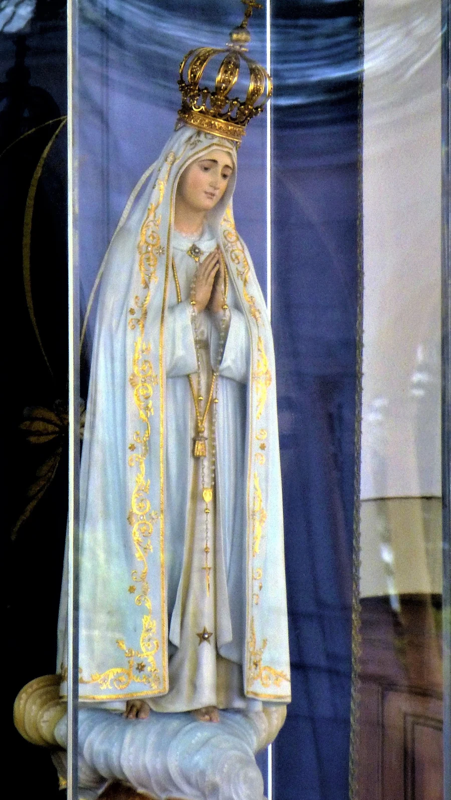

Primer sábado · Inmaculado Corazón de María
Exposición del Santísimo Sacramento, Rosario meditado y Santa Misa.

En Santiago
Habitualmente, el primer sábado hay exposición del Santísimo Sacramento con Rosario meditado a las 11:00, seguida de Misa cantada a las 12:00.
Hay confesiones durante las Misas. Consulte el calendario semanal para confirmar los horarios de cada mes.
Los cinco primeros sábados
La devoción de los cinco primeros sábados responde a la petición de Nuestra Señora en Fátima de reparar las ofensas contra su Inmaculado Corazón.
Durante cinco meses consecutivos, comprende:
- La confesión sacramental.
- La Sagrada Comunión el primer sábado.
- El rezo de cinco decenas del Rosario.
- Quince minutos de meditación de los misterios del Rosario, además de su rezo.
Todo ello con intención de reparación al Inmaculado Corazón de María.
En Viña del Mar
Consulte en el calendario semanal los horarios de Misa, exposición del Santísimo y meditación del Rosario en la capilla San José de los Ángeles.